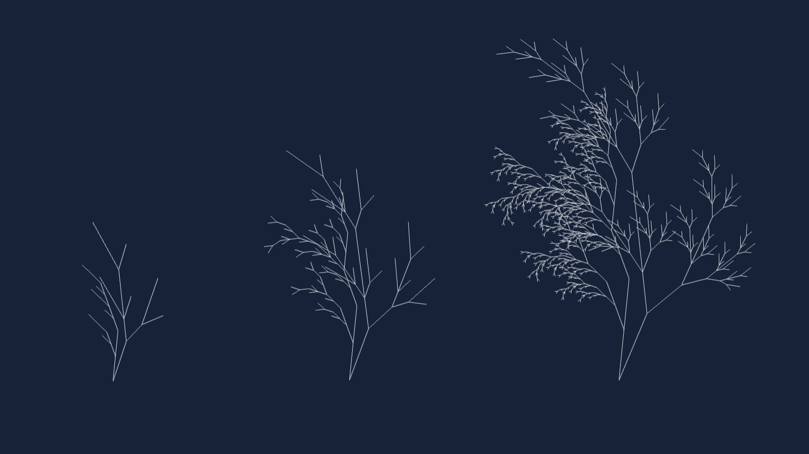

PROJECT 2 - SEASONS
This algorythm generates a bush or tree linedrawing with the help of recursive functions. The linedrawing can be seen in different times of the year in one object. While the summer side is being filled with finer curves meaning more leaves and branches, the winter side has less and longer curves making it look bare.

With the help of two recursive functions an asymmetrical bush linedrawing is created and rendered.

With changing the slider, you can vary the complexity of the linedrawing.